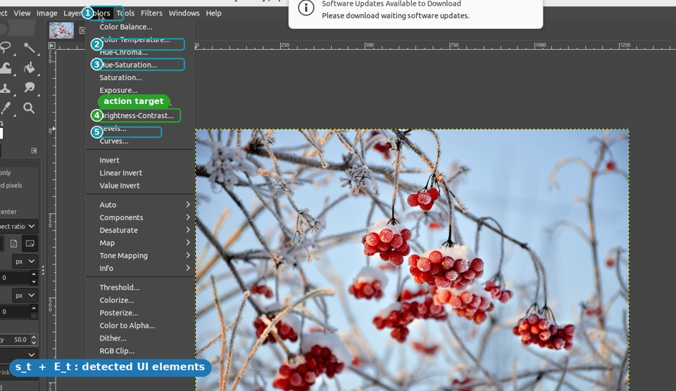
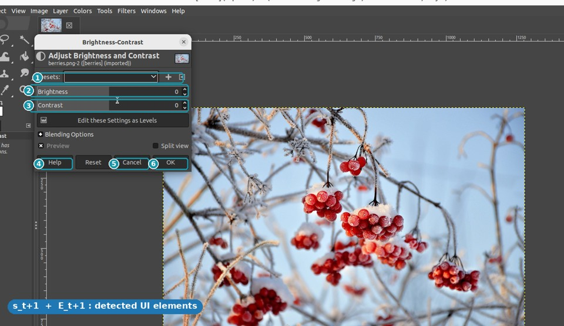
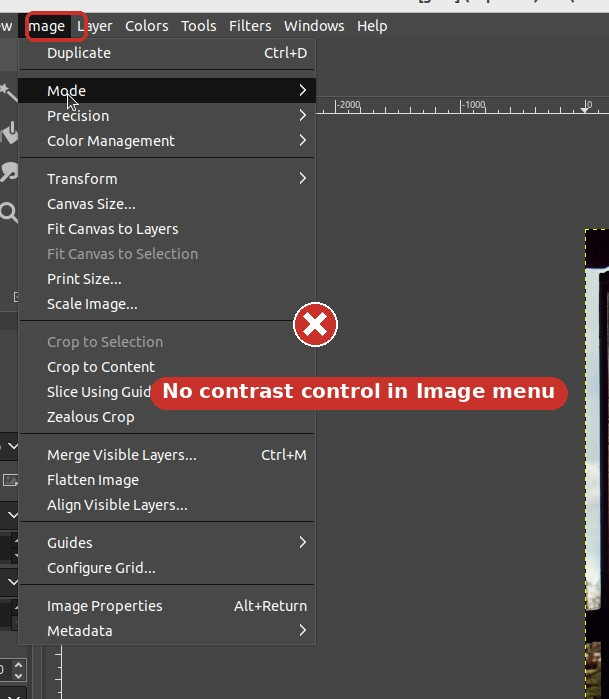
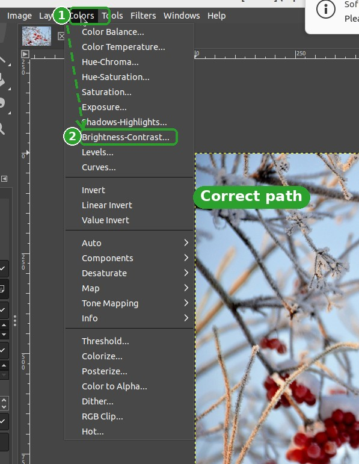
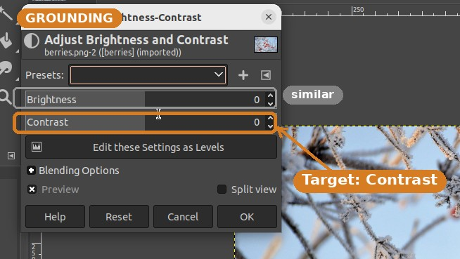
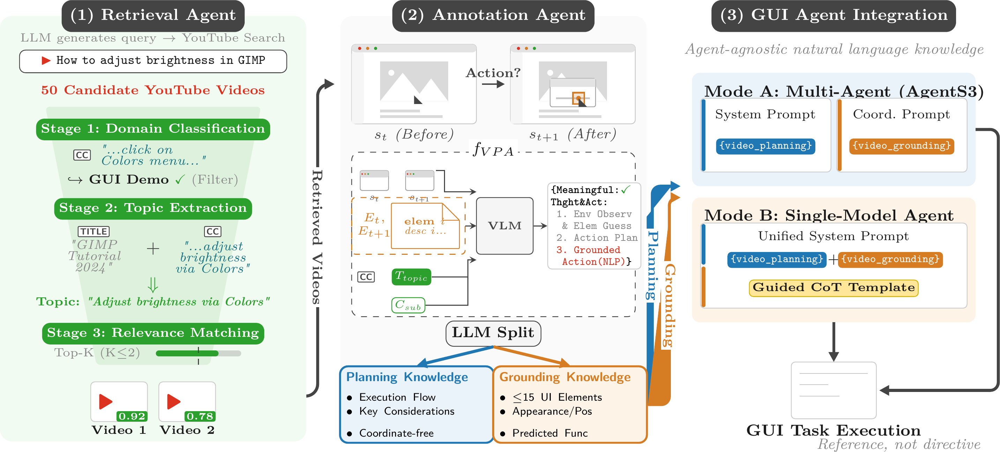
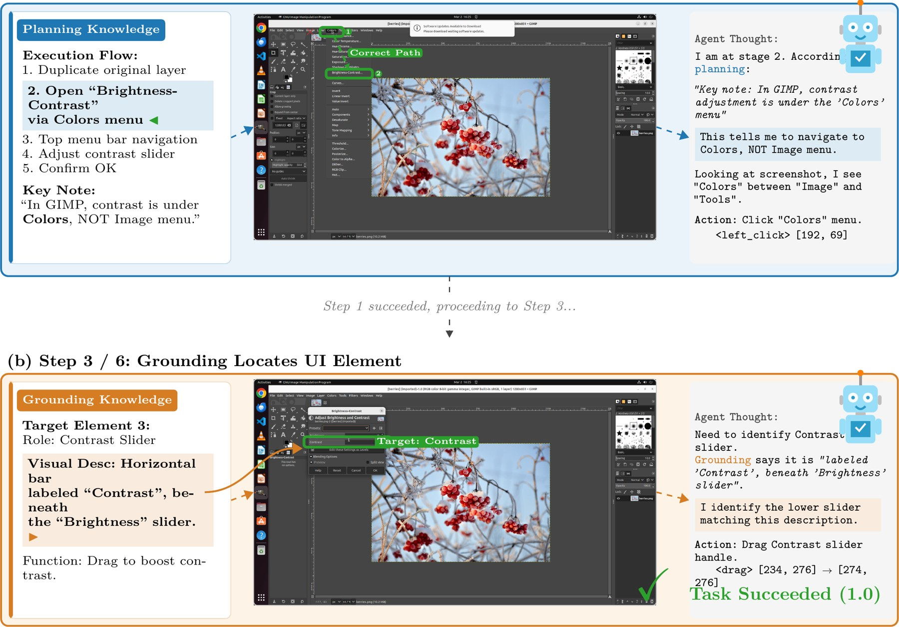

GUIDE
Resolving Domain Bias in GUI Agents through Real-Time Web Video Retrieval and Plug-and-Play Annotation
1Shanghai Jiao Tong University
2State Key Laboratory for General Artificial Intelligence, BIGAI ·
3Beijing Institute of Technology
✉ Corresponding authors
Training-free, plug-and-play video-RAG that gives GUI agents domain expertise from web tutorials — +4.47 to +7.48 pp on OSWorld, no fine-tuning.
See it work
GUIDE in one loop
A task comes in, a tutorial is retrieved live, a VLM turns keyframes into knowledge, and the agent navigates to the right menu.

fVPAinfer
action

st → st+1 with their element graphs Et, Et+1 and subtitle context to infer the action — "click Brightness-Contrast."- Duplicate the original layer
- Open Colors → Brightness-Contrast
- Drag the Contrast slider up
- Confirm with OK
- Contrast slider — horizontal bar labeled "Contrast", beneath "Brightness"
- Brightness-Contrast — 8th item in the Colors menu
- OK — confirm button, lower-right of dialog

Guesses Image → Adjustments, a Photoshop habit — contrast isn't here.

Planning points to Colors → Brightness-Contrast. Task succeeds.
The agent navigates to the right menu instead of guessing — +7.48 pp on OSWorld.
(Seed-1.8)
improved
(WindowsAgentArena)
changed
Abstract
Large vision-language models give GUI agents strong general skills, yet they stumble on specific applications they rarely saw in training. This domain bias shows up two ways: agents do not know an app's operation workflow (planning) or its UI layout (grounding).
GUIDE is a training-free, plug-and-play framework that closes this gap by learning from web tutorial videos. A subtitle-driven Video-RAG pipeline searches YouTube live and progressively filters candidates through domain classification, topic extraction, and relevance matching. A fully automated VLM pairwise annotation pipeline then reads consecutive keyframes enhanced with UI element detection to infer transferable planning and grounding knowledge, injected directly into the agent's modules. On OSWorld, GUIDE delivers +4.47 to +7.48 percentage-point gains across three agent architectures and transfers cross-benchmark to WindowsAgentArena — all without modifying model weights.
The Problem
Domain bias is an alignment gap, not a capability gap
GUI agents have strong general reasoning and perception, but they lack familiarity with specific software. The model does not lack capability — it lacks domain knowledge. Conventional fixes such as manual annotation, expert rules, or domain-specific fine-tuning are costly, narrow, and cannot keep pace with continuously evolving interfaces.
Knows "adjust brightness," but reaches for Image → Adjustments (a Photoshop habit). In GIMP, contrast lives under Colors.

Recognizes "a slider," but cannot pick out the correct Contrast control among several visually similar ones.
Method · How GUIDE works
Three collaborating agents, zero fine-tuning
A Retrieval Agent finds the right tutorial, an Annotation Agent turns it into knowledge, and that knowledge is injected plug-and-play into the downstream GUI agent.

Subtitle-driven Video-RAG
An LLM turns the task into a query and pulls 50+ YouTube candidates. Subtitles narrate the steps and UI names, bridging into otherwise opaque video.
VLM pairwise annotation
Whisper, MOG2 keyframes, and OmniParser feed a VLM that compares frame pairs to infer each action in a transferable, coordinate-free format.
Plug-and-play injection
An LLM splits each trajectory into two channels, injected into the planning and grounding modules as reference — never as directives.
Two knowledge channels
Planning tells what; Grounding tells where
Planning
The domain-specific operational workflow: what steps to take, in what order, and which menus and panels to navigate. Deliberately coordinate-free so it transfers across resolutions and layout versions.
- Execution flow: coherent step sequences and stage objectives
- Key considerations: distilled expert insight to avoid pitfalls
- Coordinate-free abstraction, decoupled from display resolution
- Accounts for ~86–91% of the total improvement
Grounding
Domain-specific UI element descriptions so the agent knows where to act — described by appearance and function rather than absolute coordinates, identifiable across interface states.
- Catalogs up to 15 key interactive elements per video
- Icon/control name, appearance & position, predicted function
- Complementary +0.69–0.80 pp, strongest in dense UIs (GIMP, Calc)
- Cuts exploration steps on success (VLC −5.0, Calc −3.7)
Results
Same knowledge, three very different agents
GUIDE is architecture-agnostic. Evaluated on OSWorld (361 tasks, 10 application domains), it improves every agent it plugs into.
| Agent | Type | Baseline | + Planning | + Plan. & Gnd. | Gain |
|---|---|---|---|---|---|
| Seed-1.8 | Single-model | 37.14 | 43.93 | 44.62 | +7.48 |
| Qwen3-VL-8B | Single-model · 8B (open) | 33.90 | 38.93 | 39.73 | +5.83 |
| AgentS3 | Multi-agent · GPT-5.2 + Seed-1.8 | 50.18 | — | 54.65 | +4.47 |
"Planning alone delivers ~86–91% of the gain; grounding is the complementary specialist — strongest where the UI is dense, as in GIMP and Calc."
Cross-benchmark transfer — WindowsAgentArena
The same coordinate-free knowledge transfers to native Windows widgets on 154 tasks, with no WAA-specific tuning.
| Backbone | Baseline | + GUIDE | Gain |
|---|---|---|---|
| Agents3 + GPT-5.2 | 49.00 | 59.21 | +10.21 |
| Qwen3-VL-32B-Instruct | 31.70 | 44.16 | +12.46 |
Per-domain results & ablation controls
| Config | Chrome | GIMP | Calc | Impress | Writer | OS | ThBrd | VLC | VSCode | Multi | Overall |
|---|---|---|---|---|---|---|---|---|---|---|---|
| Baseline | 36.87 | 26.92 | 29.79 | 43.09 | 34.77 | 45.83 | 66.67 | 47.06 | 60.87 | 26.88 | 37.14 |
| + GUIDE | 47.74 | 42.31 | 48.94 | 45.31 | 56.51 | 50.00 | 73.33 | 52.32 | 65.22 | 25.74 | 44.62 |
| Config | Chrome | GIMP | Calc | Impress | Writer | OS | ThBrd | VLC | VSCode | Multi | Overall |
|---|---|---|---|---|---|---|---|---|---|---|---|
| Baseline | 41.18 | 38.46 | 51.06 | 44.62 | 52.17 | 70.83 | 73.33 | 73.91 | 73.91 | 40.32 | 50.18 |
| + GUIDE | 49.85 | 53.85 | 65.96 | 46.88 | 65.22 | 70.83 | 80.00 | 56.25 | 82.61 | 37.10 | 54.65 |
| Retrieval mode | Mean | Acc. ≥ 0.5 | 1.0 / 0.5 / 0.0 |
|---|---|---|---|
| Full GUIDE | 0.867 | 96.00% | 77.33 / 18.67 / 4.00 |
| Title-only | 0.782 | 88.67% | 67.67 / 21.00 / 11.33 |
| Random | 0.628 | 80.33% | 45.33 / 35.00 / 19.67 |
Structured conversion matters. A Watch & Learn-style raw-trajectory control on the same Qwen3-VL-8B backbone scores 31.96% — below the 33.90% baseline — confirming the gain comes from converting tutorials into structured Planning/Grounding knowledge, not from raw video. Overall, successful tasks grow from 134 to 161 (+20.1%).
Retrieval coverage. Of 361 OSWorld tasks, 82.8% retrieve at least one relevant video and 42.7% of covered tasks retrieve a second for multi-perspective reference. GUI classification reaches 100% precision (94.3% accuracy); subtitle-driven topic extraction reaches mean 0.867 with 96% acceptable.
Qualitative · GIMP contrast task
Watching the knowledge guide the agent

"In GIMP, contrast is under Colors, NOT the Image menu." The agent follows the workflow ① Colors → ② Brightness-Contrast instead of the Photoshop-style Image → Adjustments it would otherwise guess.
"A horizontal bar labeled Contrast, beneath the Brightness slider." The description lets the agent pick the right control among several visually similar sliders, then drag to boost contrast.
Open resources
Dataset, code & paper
Dataset
Annotated tutorial videos across 10 application domains, plus pre-computed Planning + Grounding knowledge for all 361 OSWorld tasks, ready for direct injection.
299 videos · 453 MP4s · 10 domains
Browse on Hugging FaceCode
The full GUIDE pipeline (Video-RAG, annotation, knowledge injection) with OSWorld and WindowsAgentArena runners and reproduction scripts.
Apache-2.0 · pipeline + evaluation
View on GitHubPaper
The full ECCV 2026 paper with method details, all tables, ablations, and the human-evaluation protocol for retrieval and annotation quality.
ECCV 2026 · camera-ready
Read the PDFCitation
BibTeX
@article{xie2026guide,
title = {{GUIDE}: Resolving Domain Bias in {GUI} Agents through
Real-Time Web Video Retrieval and Plug-and-Play Annotation},
author = {Xie, Rui and Gao, Zhi and Shi, Chenrui and Shang, Zirui
and Chen, Lu and Li, Qing},
journal = {arXiv preprint arXiv:2603.26266},
year = {2026}
}